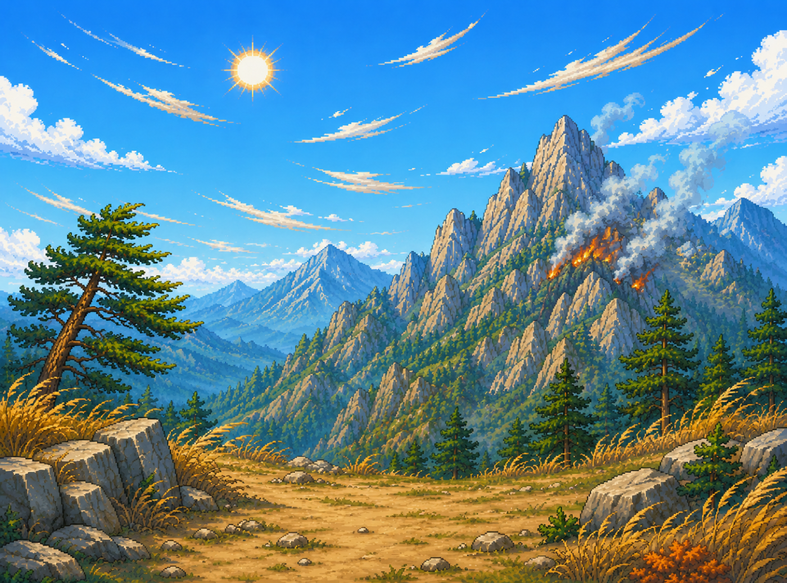
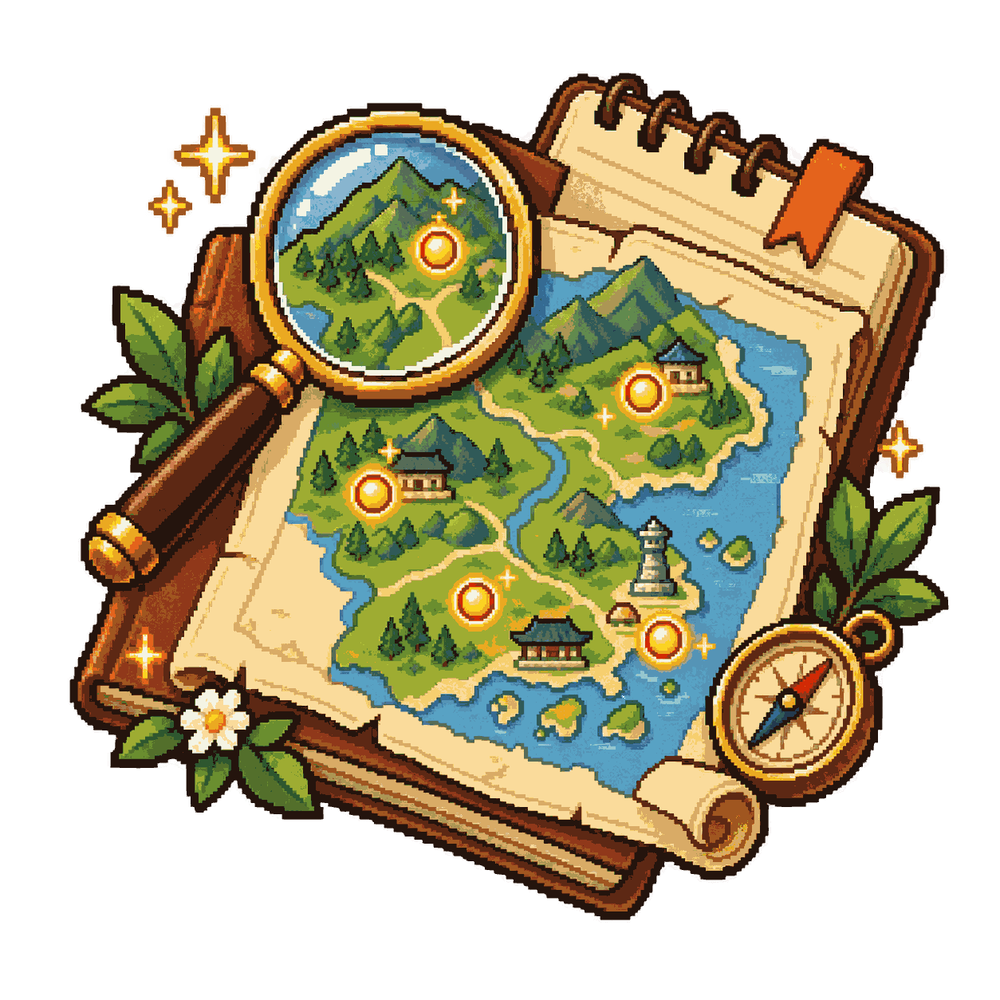

🔧 관리자
🌤️ 날씨 친구
조작법
← → 또는 A / D · 좌우 이동
Shift · 달리기
Space · 점프
E · 조사 / 대화
Tab 또는 I · 기상수첩
✦ 표시 · 살펴볼 곳
태백산맥 서쪽에서 동쪽으로 산을 넘으며, 만나는 사람과 대화하고 주변을 조사한다. 관측 지점 3곳(영서·능선·영동)에서 기온·습도·풍속·풍향을 측정→기록하면, 산을 넘은 바람이 어떻게 변하는지 기상수첩에서 비교할 수 있다.
'하늘이' — 기상예보관이 꿈인 학생
어떤 친구와 팔도를 탐험할까?

남학생 하늘이

여학생 하늘이
날씨수첩 · 팔도 지도

{{ r.mark }}
{{ r.tipText }}
{{ lockToast }}
예보관 수첩
하늘이
어린이 예보관 후보
팔도의 날씨 비밀을 풀고 도장 9개를 모으면 전국 예보관 시험이 열린다.
모은 도장
{{ stampCount }} / 9
코인
💰 {{ coins }}
▶ 다음 목적지: {{ nextRegionName }}
{{ nextRegionHint }}

강원 · 태백산맥
무엇을 해볼까?

🥾 탐험 시작
태백산맥을 직접 넘으며 산불의 원인을 찾는 이야기 모험을 떠나요.
모험 떠나기 ▶

🌦️ 기상 실험실
습도·바람·기온·비를 직접 바꿔서, 강원의 날씨와 산불 위험이 어떻게 달라지는지 알아봐요.
실험실 열기 ▶

≈ ≈ ≈
≈ ≈ ≈ ≈
{{ m.bubbleText }}
{{ m.promptMark }}
{{ m.promptText }}
✓
{{ m.name }}
✓
{{ m.name }}
{{ m.icon }}
{{ t.emoji }}
{{ jPetEmoji }}
{{ c.emoji }}
▶
[E] 다음 구간
💰{{ coins }}
{{ coinPopN }}
구간 {{ jStageNo }}/9
{{ jStageName }}
관측 기록
{{ jObsCount }} / 3
← → 이동 · Space 점프 · Shift 달리기 · E 조사 · Tab 수첩
{{ jToast }}
{{ jdName }}
{{ jdLine }}
▼ [E]
{{ jdConfirmText }}
{{ jdWhyText }}
📖
하늘이의 기상수첩
현재 위치: {{ jStageName }}
다음 목적지: {{ jNextName }}
모은 단서 ({{ jClueCount }}/5 핵심)
{{ n.badge }}{{ n.label }}
{{ n.text }}
아직 모은 단서가 없어. 사람들과 대화하고 ✦ 표시를 조사해 보자!
기상 관측 기록 ({{ jObsCount }}/3)
위치
기온
습도
풍속
풍향
{{ r.loc }}
{{ r.temp }}
{{ r.hum }}
{{ r.wind }}
{{ r.dir }}
{{ jCompareMsg }}
🔭 관측 지점 · {{ joLabel }}
관찰▸
측정▸
기록
🔒
기기 뚜껑이 아직 닫혀 있어
뚜껑을 열면 계기판 바늘이 지금 이곳의 값을 가리켜.
그 값을 다이얼로 직접 맞춰서 수첩에 적어야 해.
그 값을 다이얼로 직접 맞춰서 수첩에 적어야 해.
{{ g.title }}
{{ g.loLabel }}
{{ g.hiLabel }}
{{ g.valText }}
{{ g.hintText }}
메뉴
단축키: Esc / M
산불의 원인을 밝혔다!
기상수첩 — 세 지점 비교
위치
기온
습도
풍속
풍향
{{ r.loc }}
{{ r.temp }}
{{ r.hum }}
{{ r.wind }}
{{ r.dir }}
{{ jCompareMsg }}
영동 산불 위험도
{{ jRiskLevel }}
{{ c.label }}
{{ c.mark }}
습도 낮음·강풍·북서풍이 겹칠수록 위험 ↑
탐험 보상
클리어 시간: {{ jClearTime }}
등급: {{ jRewardTier }}
용돈: {{ jRewardMoney }}
등급: {{ jRewardTier }}
용돈: {{ jRewardMoney }}
🏅 관측왕 배지 획득!
🌬️
학습노트 — 푄현상과 양간지풍
바람이 산을 타고 오를 때는 공기가 차가워지며 구름과 비·눈을 만든다. 산을 넘어 내려올 때는 공기가 다시 따뜻해지는데, 이미 물기를 잃었기 때문에 따뜻하고 건조한 바람이 된다. 이것이 푄현상이다.
강원 동해안의 양간지풍은 태백산맥을 넘은 이런 바람이다. 건조하고 강해서 작은 불씨도 큰 산불로 키울 수 있다.
영서(서쪽)
습하고 구름 많음
습하고 구름 많음
산맥 고개
바람이 강해짐
바람이 강해짐
영동(동쪽)
따뜻·건조, 산불위험
따뜻·건조, 산불위험
예보관의 한 줄: “예보관은 날씨를 맞히는 사람이 아니라, 날씨 때문에 위험해질 사람을 먼저 지키는 사람이다.”
하늘이 잡화점
💰{{ coins }}
{{ gCapsuleTitle }}
{{ gCapsuleEmoji }}
1회 뽑기 {{ gCost }}💰
{{ gRefundText }}
{{ gRefundText }}
{{ gWarn }}
?
{{ gReveal.emoji }}
{{ gReveal.rarityName }}
{{ gReveal.name }}
✨ 새로 획득! 보관함에서 장착하세요
이미 가진 것 — 코인 일부 환급
🎈 캡슐을 뽑아
날씨 꾸미기 아이템을 모으세요!
날씨 꾸미기 아이템을 모으세요!
등급별 확률
{{ r.name }} {{ r.rate }}
팔도를 탐험하며 모은 코인으로 원하는 옷을 확정 구매해 하늘이를 꾸며보자!
{{ s.emoji }}
{{ s.name }}
{{ s.sub }}
💰 {{ s.priceLabel }}
{{ gShopMsg }}
내 캐릭터
{{ c.emoji }}
{{ gPetPreviewEmoji }}
옷은 슬롯별로,
펫은 1마리 장착
펫은 1마리 장착
👕 옷 {{ gTotalOwned }}/{{ gTotalItems }}
{{ sec.name }}
{{ sec.countText }}
{{ c.rarityName }}
{{ c.emoji }}
{{ c.name }}
착용중
🐾 펫 {{ gPetOwned }}/{{ gPetTotal }}
{{ c.rarityName }}
{{ c.emoji }}
{{ c.name }}
{{ c.sizeText }}
동행중
🌦️ 강원 기상 실험실
값을 바꿔 강원의 날씨를 만들어 보자
N
S
W
E
{{ labWindFromLabel }} · {{ labWindTowardLabel }}쪽으로
하늘 {{ labSky }}
하늘 {{ labSky }}
🔥
산불 위험 점수
{{ labRisk }}/100 · {{ labRiskLevel }}
실효습도 {{ labHeff }}%
{{ labDryAlert }}
· 실효습도(여러 날 촉촉함)·바람 세기·바람 방향·기온·비로 계산
날씨 조절판
습도와 바람을 막대로 움직여 봐요
💧 습도 (메마름↔축축함){{ labHum }}%
🌀 바람 세기{{ labWind }} m/s
🌡️ 기온{{ labTemp }}℃
🌧️ 비·구름{{ labPrecipLabel }}
📅 마지막으로 비·눈 온 뒤{{ labDryDaysLabel }}
비가 오래 안 올수록 실효습도가 낮아져 더 메마라요.
🧭 바람 방향
🔎 이 날씨는?
{{ labReadout }}
🛰️ 실제 기상청 관측 불러오기
실제 기상청 기록 · {{ labGhostStation }} 관측소 · {{ labGhostDate }}
실효습도 {{ labGhostHeff }}% · 그날 산불 위험 점수 {{ labGhostRisk }}/100
🛰️ 실제 그날 {{ labGhostRisk }} · 지금 만든 날씨 {{ labRisk }}
{{ labGhostNote }}
{{ labPairText }}
강원 기후 시나리오 (눌러서 재현)
경상도 · 여름 폭염
무엇을 해볼까?
{{ gbError }}
🥾 관측 기록
밀양·의성·봉화·부산·포항을 여행하며 실제 관측자료로 폭염의 단서를 모아요.
여행 떠나기 ▶
🌡️ 폭염 기상실험실
기온·습도·바람을 직접 바꿔서, 더위 환경이 어떻게 달라지는지 알아봐요.
실험실 열기 ▶
폭염의 흔적을 찾아서
기상청 ASOS·AWS 관측자료
탐사
{{ gbStoryDone }}/{{ gbStoryTotal }}
어디로 갈까?
📅 카드마다 관측한 날짜 · 순서는 자유예요
{{ p.badge }}
{{ p.stateLabel }}
{{ p.name }}
{{ p.zoneLabel }}
📅 {{ p.dateLabel }}
{{ p.tempLabel }}
{{ p.tagLabel }}
☀ 노란 테두리 = 지금 미션 · ✓ 초록 = 관측 완료
궁금한 곳부터 눌러 관측해 보세요!
궁금한 곳부터 눌러 관측해 보세요!
🗺️ 탐사 경로 — 누르면 이동
왼쪽 지역 카드를 눌러 조사해 보세요.
순서는 자유예요 — 궁금한 곳부터!
☀ 지금 표시가 이어서 볼 곳이에요.
5개 지역을 모두 모으면 🔎 탐정 노트가 열려요!
순서는 자유예요 — 궁금한 곳부터!
☀ 지금 표시가 이어서 볼 곳이에요.
5개 지역을 모두 모으면 🔎 탐정 노트가 열려요!
📍 {{ gbSelChapter }}
“{{ gbSelAsk }}”
{{ gbSelType }}
{{ gbSelZone }}
{{ gbSelName }} · ID {{ gbSelId }} · 고도 {{ gbSelElev }}
👀 주변을 살펴보면
{{ gbSelEnvClue }}
{{ gbSelEnvClue }}
{{ gbSelGuessQ }}
{{ gbDate }} 오늘의 관측
🌡️ 기온{{ gbSelMax }}
💧 습도{{ gbSelHum }}
🍃 바람{{ gbSelWind }}
⛰️ 높이{{ gbSelElev }}
🧭 풍향{{ gbSelDirName }}
☀ 폭염일
🌙 열대야
✓ 기상수첩에 기록했어요
📋 기상 수첩
단서 {{ gbStoryDone }}/{{ gbStoryTotal }} 발견!
{{ c.zone }}{{ c.hwLabel }}
{{ c.clueIcon }} {{ c.name }}
🌡️ 기온{{ c.max }}
{{ c.secondIcon }} {{ c.secondLabel }}{{ c.secondVal }}
발견한 단서: {{ c.clueIcon }} {{ c.clueName }}
🧭 자유 탐방 — 더 살펴보고 싶다면
모든 단서를 모았어요. 🔎 탐정 미션에서 이유를 찾아봐요!
단서를 {{ gbStoryDone }}/{{ gbStoryTotal }} 모았어요. 남은 지역도 관측해봐요!
📈 하루 기온 변화
시간별 관측자료를 불러오는 중입니다… (약 10MB, 잠시만요)
{{ gbHError }}
{{ gbHStationName }} · {{ gbHDate }}
{{ gbYTopLabel }}
{{ gbYBotLabel }}
{{ x.label }}
가장 더운 시간 {{ gbPeakLabel }}
가장 시원한 시간 {{ gbLowLabel }}
낮과 밤의 차이 {{ gbRangeLabel }}
🎯 미션 — 그래프의 점을 눌러 가장 더웠던 시간을 맞혀보세요!
이 날은 시간별 자료가 없어요. 다른 날짜를 골라보세요.
📅 폭염·열대야 달력
일
월
화
수
목
금
토
{{ c.day }}
{{ c.mark }}
{{ c.mark }}
{{ gbCalYM }} · ☀ 폭염일 {{ gbCalHwCount }}일 · 🌙 열대야 {{ gbCalTnCount }}일
{{ gbCalSelDate }}
{{ gbCalSelFlag }}
최고 {{ gbCalSelMax }}
최저 {{ gbCalSelMin }}
야간최저 {{ gbCalSelNight }}
습도 {{ gbCalSelHum }}
바람 {{ gbCalSelWind }}
강수 {{ gbCalSelPrcp }}
날짜를 눌러 그날의 관측값을 확인해요.
폭염일·열대야 표시는 기상청 자료에 기록된 값을 그대로 사용해요.
폭염일·열대야 표시는 기상청 자료에 기록된 값을 그대로 사용해요.
🌡️ 기상 실험실
먼저 가설을 고르고, 값을 바꿔 확인해요
① 가설 세우기
② 아래 슬라이더를 움직여 가설을 확인해 보세요!
🌡️ 기온{{ gbLabTemp }}℃
💧 습도{{ gbLabHum }}%
🌀 바람{{ gbLabWind }} m/s
🕐 시간대{{ gbLabHour }}시
학습용 더위 환경 점수
{{ gbLabScore }}/100 · {{ gbLabLevel }}
※ 이 점수는 학습용으로 만든 값이에요. 기상청 공식 지수나 특보 기준이 아니에요.
{{ gbLabReadout }}
🛰️ 실제 폭염 사례
기상청 관측자료에서 불러와 비교해요
{{ gbCaseName }} · {{ gbCaseDate }}
{{ gbCaseZone }} · {{ gbCaseFlag }}
최고 {{ gbCaseMax }}
최저 {{ gbCaseMin }}
야간최저 {{ gbCaseNight }}
습도 {{ gbCaseHum }}
바람 {{ gbCaseWind }}
강수 {{ gbCasePrcp }}
{{ gbCaseDiff }}

기상 탐정 미션
🗺️ 하늘이의 기상지도 — 경상도 전체에 나타난 조건
🌀 고기압
→
☀️ 맑은 날
→
🔥 강한 햇빛
→
🏞️ 땅이 뜨거워짐
고기압의 영향으로 맑은 날이 이어지면 낮 동안 햇볕을 오래 받아요. 그러면 땅과 공기가 더 뜨거워질 수 있어요.
여러 지역에서 찾은 단서를 보고 가장 알맞은 설명을 골라보세요.
찾은 단서 (눌러서 확인)
{{ e.detail }}
왜 여름에는 덥고, 왜 경상도에서는 강한 폭염이 자주 나타날까요?
{{ gbHypoWhy }}
그럼 기온·습도·바람을 직접 바꿔보면 어떻게 될까요?
🔬 추가 탐구
이런 폭염은 얼마나 자주 나타났을까? 더 깊이 살펴봐요
🗺️ 전체 관측망은 탐험 탭에서 볼 수 있어요.
위의 추가 탐사 버튼을 누르면 해당 관측소로 바로 이동합니다.
위의 추가 탐사 버튼을 누르면 해당 관측소로 바로 이동합니다.
경상도 탐험 퀴즈 {{ gbQuizNo }}/{{ gbQuizTotal }}
맞힌 개수 {{ gbQuizScore }}
{{ gbQuizQ }}
퀴즈 완료!
{{ gbQuizTotal }}문제 중 {{ gbQuizScore }}문제 정답
같은 경상도라도 고도·지형·바다와의 거리에 따라 더운 정도가 달라요. 낮의 최고기온뿐 아니라 밤에도 안 식는 열대야까지 봐야 진짜 더위를 알 수 있어요.
{{ gbStoryNpc }}
{{ gbStoryTitle }}
{{ gbStoryText }}
▼ 계속
기록 완료 ▶
🔎 관측 결과
{{ gbAfterMsg }}
🔓 {{ gbAfterNext }}
{{ gbToast }}
경상도 날씨수첩
경상도 · 폭염과 열대야
🌡️
폭염 관측 배지
경상도 날씨수첩에 폭염 관측 배지가 찍혔다!
기념품 획득 — 기상 관측 온도계 🌡️
강원 날씨수첩
강원 · 양간지풍
🌀
바람개비 도장
강원 날씨수첩에 바람개비 도장이 찍혔다!
남은 7개 지역은 곧 열립니다 — 충청 · 전라 · 경기 · 경상 · 황해 · 평안 · 함경
남은 7개 지역은 곧 열립니다 — 충청 · 전라 · 경기 · 경상 · 황해 · 평안 · 함경
🎁 기념품 획득
양간지풍 바람막이 🧥
강원 완주자만 갖는 기념품 등급 · 보관함에서 장착
양간지풍 바람막이 🧥
강원 완주자만 갖는 기념품 등급 · 보관함에서 장착
🌤️
날씨 친구
{{ chatRegionLabel }} · 무엇이든 물어봐!
✕
{{ m.text }}
생각 중…
{{ o.text }}
관측 자료 기상청 ASOS·AWS · 북한 WMO GTS 27지점 |
현재 날씨 Open-Meteo (CC BY 4.0) |
Powered by Kanana (kakaocorp/kanana-2-30b-a3b-instruct-2601)
Kanana is licensed in accordance with the Kanana License Agreement. Copyright © KAKAO Corp. All Rights Reserved.
이 대화의 답변은 생성형 AI가 만든 것입니다. 관측 기록은 기상청 실측이지만 문장은 AI가 생성하므로 사실과 다를 수 있습니다. (인공지능 기본법에 따른 고지)
로그인이 없어 이용자를 식별하지 않습니다. 서비스 개선을 위해 질문을 기록할 수 있으며, 이름·전화번호·주소 등 개인정보는 저장 전에 가립니다.
Kanana is licensed in accordance with the Kanana License Agreement. Copyright © KAKAO Corp. All Rights Reserved.
이 대화의 답변은 생성형 AI가 만든 것입니다. 관측 기록은 기상청 실측이지만 문장은 AI가 생성하므로 사실과 다를 수 있습니다. (인공지능 기본법에 따른 고지)
로그인이 없어 이용자를 식별하지 않습니다. 서비스 개선을 위해 질문을 기록할 수 있으며, 이름·전화번호·주소 등 개인정보는 저장 전에 가립니다.
🗺️ 한 곳씩 차례로
지금 열린 곳은 {{ nextRegionName }} 하나예요.
마치면 다음 지역이 열리고, 8도를 다 돌면
마지막 제주도에서 예보관이 됩니다.
마치면 다음 지역이 열리고, 8도를 다 돌면
마지막 제주도에서 예보관이 됩니다.
{{ tutProgress }}
🔊 소리 설정
{{ v.label }}{{ v.valText }}
🔧 관리자 모드
대화·오브젝트 확인 같은 진행 조건을 건너뛰고 결말을 바로 볼 수 있어요. 저장 기록은 그대로 유지됩니다.
모은 도장 {{ adminStampCount }} / 9 · 관측 조건 통과 켜짐